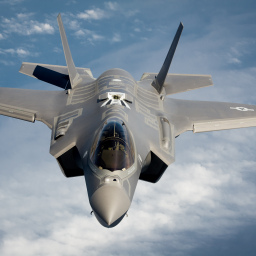

El Lockheed Martin F-35 Lightning II (rayo II en inglés) es un avión de combate polivalente de quinta generación, monoplaza y con capacidad furtiva, desarrollado bajo el programa Joint Strike Fighter para reemplazar al F-16, A-10, F/A-18 y al AV-8B en misiones de ataque a tierra, reconocimiento y defensa aérea. Este avión fue diseñado en tres versiones distintas: el F-35A para despegue y aterrizaje convencional (CTOL), el F-35B capaz de realizar despegues cortos y aterrizajes verticales (STOVL) y el F-35C que es una variante naval capaz de operar en portaaviones. El F-35 es el descendiente del X-35 presentado por Lockheed-Martin en el programa Joint Strike Fighter (JSF), en el que compitió contra el X-32 propuesto por Boeing. El 24 de octubre de 2001 el prototipo X-35 fue anunciado como vencedor del concurso, que traía aparejado un contrato de doscientos millardos de dólares13 (200 000 millones de USD) para fabricar el nuevo avión. En la financiación del programa colaboran, además de los Estados Unidos, el Reino Unido, Italia, Australia, Canadá, Dinamarca, Países Bajos, Noruega y Turquía, que aportan fondos adicionales. En su diseño y fabricación han colaborado un grupo de empresas aeroespaciales liderado por Lockheed Martin, con BAE Systems y Northrop Grumman como socios principales. El F-35 realizó su primer vuelo el 15 de diciembre de 2006.
